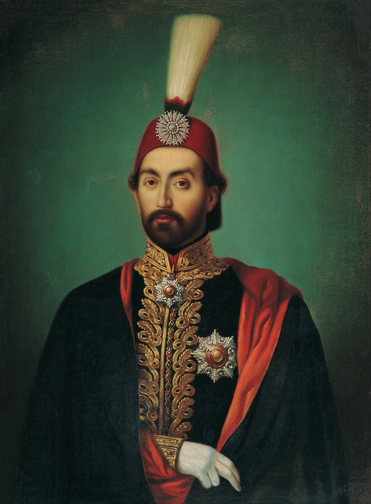

| önceki |  |
sonraki |
Sultan Abdülmecid, Osmanlı İmparatorluğu'nun otuz birinci padişahı ve 96. İslam halifesidir. Babası II. Mahmud, annesi Bezmiâlem Valide Sultan'dır. Henüz 16 yaşında tahta çıkmış; Tanzimat Fermanı ve Islahat Fermanı'nı ilan ederek Osmanlı hukukunda kanun önünde eşitlik ve modern vatandaşlık devrini açmıştır. Dolmabahçe Sarayı'nı inşa ettiren, Osmanlı'yı Avrupa Devletler Hukuku ailesine sokan ve kendisinden sonra tahta geçecek dört padişahın (V. Murad, II. Abdülhamid, V. Mehmed Reşad, VI. Mehmed Vahdeddin) babası olan tarihi bir hükümdardır.
TANZİMAT FERMANI (3 Kasım 1839): Hukuk Devleti Hamlesi
25 Nisan 1823 tarihinde İstanbul'da doğdu. Fransızca öğrenmiş, modern Batı kültürünü özümsemiş nazik ve reformcu bir şehzadeydi. Babasının vefatı üzerine 1 Temmuz 1839'da tahta çıktı. Sadrazam Koca Mustafa Reşid Paşa'nın hazırladığı Gülhane Hatt-ı Hümâyunu (Tanzimat Fermanı) 3 Kasım 1839'da Gülhane Parkı'nda yerli ve yabancı elçilerin önünde okundu:
- Müslüman ve gayrimüslim tebaa ayrımı yapılmaksızın herkesin can, mal ve ırz güvenliği devlet garantisi altına alındı.
- Vergilerin herkesin gelirine göre adil toplanması ve askerliğin vatan borcu sayılarak belli sürelere bağlanması hükme bağlandı.
- Padişah, kanunların üstünde olmadığını ve fermandaki kurallara bizzat kendisinin de uyacağını ilan etti. Böylece Osmanlı'da anayasal hukuk devletinin temelleri atıldı.
Macar Mültecileri Krizi ve Padişahın Onurlu Duruşu (1849)
1848 Macar İhtilali'nin Avusturya ve Rusya tarafından kanla bastırılmasının ardından Lajos Kossuth liderliğindeki Macar ve Polonyalı hürriyet savaşçıları Osmanlı Devleti'ne sığındı. İki dev imparatorluğun savaş tehditlerine ve ültimatomlarına rağmen Sultan Abdülmecid mültecileri teslim etmeyi kesin bir dille reddetti ve tarihe geçen şu sözü söyledi:
"Tacımı tahtımı terk ederim, lâkin bana sığınan mültecileri düşmana asla teslim etmem!" Bu asil tavır tüm Avrupa halkları nezdinde Osmanlı'ya muazzam bir sempati kazandırdı.
Kırım Savaşı (1853 – 1856) ve Paris Antlaşması
Rus Çarı I. Nikolay'ın Osmanlı'yı "Hasta Adam" ilan ederek Boğazlar ve Kutsal Yerler bahanesiyle başlattığı Kırım Harbi'nde İngiltere, Fransa ve Piyemonte Osmanlı Devleti'nin yanında yer aldı:
- Sivastopol Kalesi kuşatılarak Rusya mağlup edildi. Bu savaşta Florence Nightingale Selimiye Kışlası'nda modern hemşireliğin temellerini attı.
- Savaş masrafları için 1854 yılında İngiltere'den Osmanlı tarihindeki ilk dış borç alındı.
- 1856 Islahat Fermanı: Gayrimüslim tebaaya mülkiyet, memuriyet ve ibadet haklarında tam eşitlik tanındı; aşağılayıcı tabirler yasaklandı ve cizye vergisi tamamen kaldırıldı.
- 1856 Paris Barış Antlaşması: Osmanlı Devleti resmen bir Avrupa devleti kabul edildi ve toprak bütünlüğü Avrupalı büyük devletlerin ortak garantisi altına alındı.
Modernleşme, Ulaşım ve Dolmabahçe Sarayı
Sultan Abdülmecid döneminde Osmanlı gündelik ve iktisadi hayatında devrim niteliğinde yenilikler yaşandı:
- İlk kâğıt para "Kâime-i Mûtebere" (1840) ve ilk madeni "Mecidiye" paraları basıldı.
- İlk demiryolu hattı (İzmir-Aydın Demiryolu) temeli atıldı (1856).
- İlk telgraf hattı döşendi (1855 Kırım Savaşı sırasında İstanbul-Varna hattı).
- Boğaziçi vapur seferlerini işleten ilk anonim şirket Şirket-i Hayriye kuruldu (1851).
- Mülkiye Mektebi (1859), Encümen-i Dâniş (Bilimler Akademisi) ve ilk kız rüştiyeleri açıldı.
- Dolmabahçe Sarayı: Mimar Garabet Balyan'a Boğaz kıyısında neobarok ve ampir üslubunda muazzam Dolmabahçe Sarayı inşa ettirildi (1856). Hanedan Topkapı Sarayı'ndan buraya taşındı. Ayrıca Ortaköy Camii (Büyük Mecidiye Camii), Ihlamur ve Küçüksu Kasırları inşa edildi. Annesi Bezmiâlem Valide Sultan tarafından da Vakıf Gureba Hastanesi kuruldu.
Vefatı
Babası gibi yakalandığı verem (tüberküloz) ve göğüs rahatsızlığı sebebiyle 25 Haziran 1861'de Ihlamur Kasrı'nda henüz 38 yaşındayken vefat etti. Cenazesi Fatih'te Yavuz Sultan Selim Camii haziresindeki türbesine defnedildi.
Ailesi
- Eşleri:
- Şevkefza Vâlide Sultân (V. Murad'ın annesi)
- Tirimüjgan Kadın Sultân (II. Abdülhamid'in annesi)
- Gülcemal Kadın Sultân (V. Mehmed Reşad'ın annesi)
- Gülüstu Vâlide Sultân (VI. Mehmed Vahdeddin'in annesi)
- Perestu Vâlide Sultân (II. Abdülhamid'in manevi annesi)
- Verd寻求nan Kadın
- Erkek çocukları: (Osmanlı'nın son 4 padişahının babasıdır)
- V. Murad (Osmanlı Padişahı, 1840 – 1904)
- II. Abdülhamid (Osmanlı Padişahı, 1842 – 1918)
- V. Mehmed Reşad (Osmanlı Padişahı, 1844 – 1918)
- VI. Mehmed Vahdeddin (Osmanlı Padişahı, 1861 – 1926)
- Şehzade Ahmed Kemaleddin (1848 – 1905)
- Şehzade Süleyman Selim (1860 – 1909)
- Şehzade Burhaneddin (1849 – 1876)
- Şehzade Nureddin (1852 – 1884)
- Kız çocukları:
- Fatma Sultân (Ali Galip Paşa ile evlendi)
- Refia Sultân (Mahmud Edhem Paşa ile evlendi)
- Cemile Sultân (Mahmud Celaleddin Paşa ile evlendi)
- Münire Sultân (İbrahim Paşa ile evlendi)
- Mediha Sultân (Sadrazam Damat Ferid Paşa ile evlendi)
Sultan Abdülmecid hakkında daha fazla bilgi için buraya tıklayın.